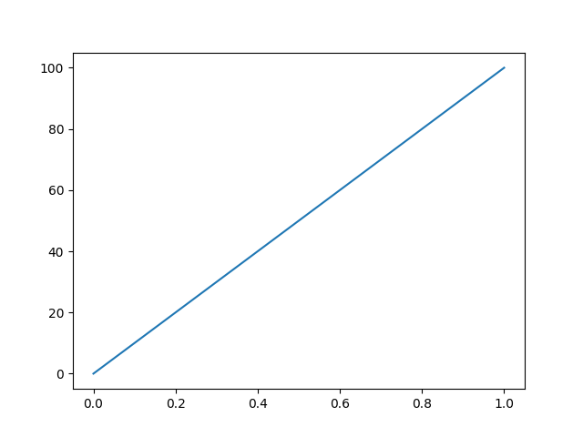
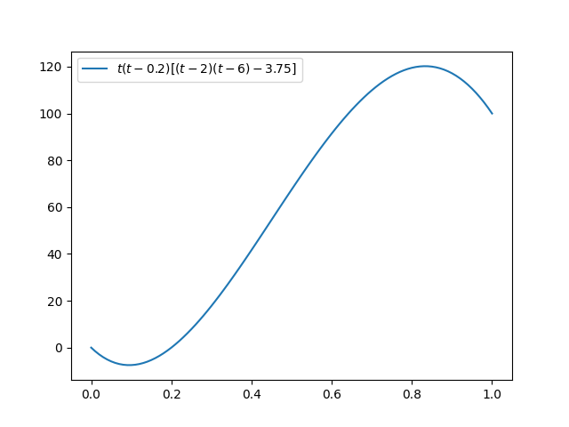
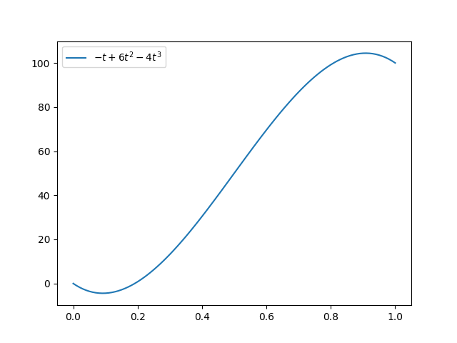
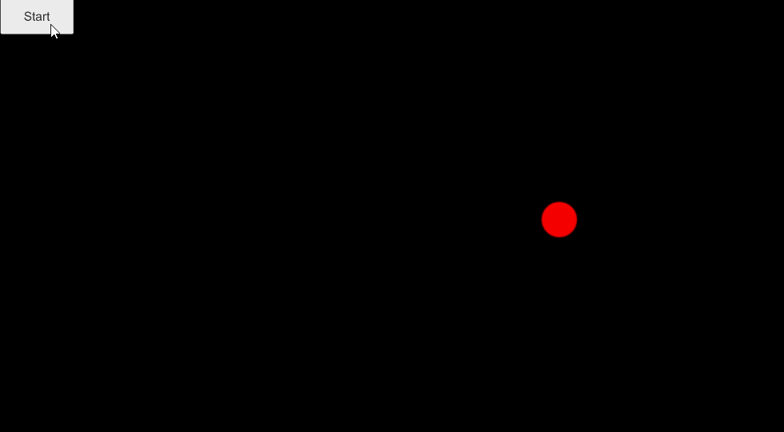
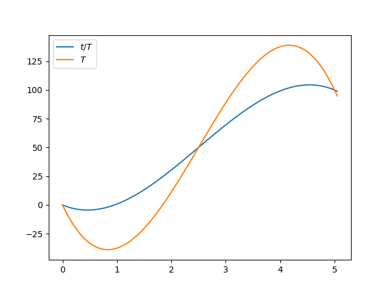
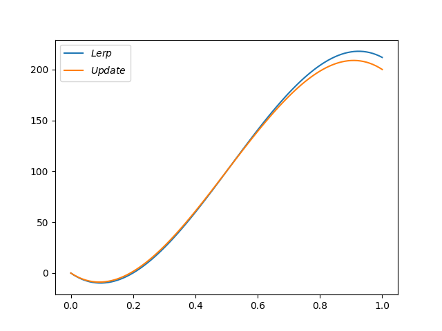
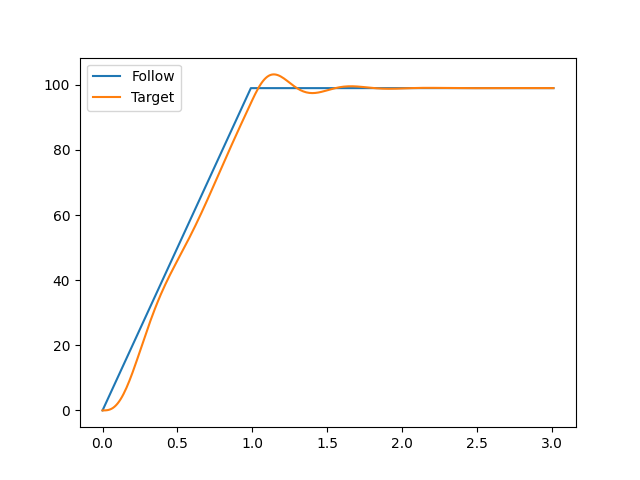
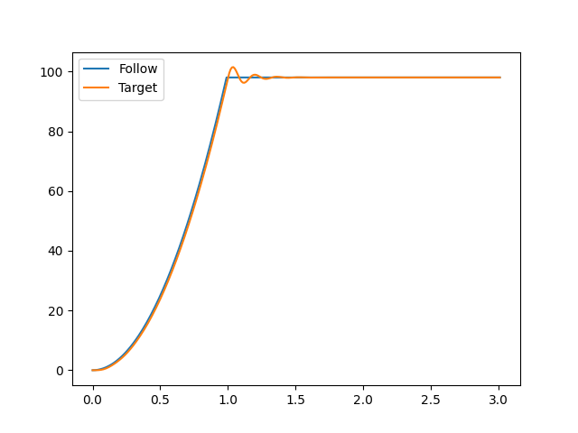

02一维运动研究
一维运动研究
本文档主要研究一维上的运动效果。所谓运动效果，主要指目标数值随时间的变化效果。即$x=x(t)$的运动效果。
对于程序实现的运动而言，这相当于一套固定系统，描述了一个点随时间演化的情况。这种结构的研究，属于数学上的动力系统分支。
这里面存在插值，映射，变化，以及动力系统等多种效果。这里记录其相关内容，来自于各种学科的知识。
除此之外，对于高维的运动，很多也都可以拆解成对应几个一维度上的运动效果来，所以这部分相当于把基础打扎实。
对于一维的只有两个关联变量$x,t$，故其可以表示在一个二维坐标系里面。这里我们可以通过Python来绘图整个曲线形状，同时我们也可以通过unity来绘制整个运动状态来看到整个表现。
而对于一个一维运动也有很多方式来进行，最简单之间的例如插值运动。除此之外还有动力系统的方式。我这里逐步解析，观察程序控制运动能解构到什么程度。
该部分一些内容也来自于二阶运动系统部分。
研究的主体方向有：
- 动力系统
- 数值分析
参考资料
- 《微分方程，动力系统与混沌引论》 哈尔滨工业大学
- 《数值分析》 电子工业出版社
从$x_1$变化到$x_2$
游戏程序里面经常要求一个值$x$在固定时间内，如$1s$内，从$x_1$变化到$x_2$。这个一般需要每帧去update更新数值来实现。而这里我们有几种视角方法来解决。
- 插值方式
- 逐步更新的动力方式
通常来说我们都会用插值的方式来解决，这里我们先研究插值方式的变化。最基础有线性插值方法：
$$x(t)=x_1+(x_2-x_1)*t，t:0\to{}1$$
这就是线性插值效果，其效果也是目标数值线性变化，如果放在二维平面上可以看到其就是平动到目标地点，其运动图像就如下图。
这里可以做一写简单的分析。
- 如果不是在单位时间，而是$T$时间内，我们可以简单用$\frac{t}{T}$取代$t$即可。此时整个图像会相当于左右水平拉伸的方式延展至$[0,T]$区间内。相当于横向等倍缩放。
- 可以想到，实际上可以用一个$f(t)\in{}[0,1],t\in[0,1]$。来取代$t$，此时$f(t)$的函数图像便会反映在图像上。例如sin函数cos函数，多项式函数，指数函数等效果。其效果可以如下图所示
这说明我们只要$f(t)$函数图像满足$f(0)=0,f(1)=1$，替换$t$即可使得插值运动过程呈现出跟$f(t)$一样的运动趋势。例如我们可以去一个多项式来进行插值。例如如下函数图像
Hermit曲线控制
但是这样任然对于整个图像比较难以控制。在计算机中，还时常使用Hermit曲线进运动控制，Hermit曲线本身也是一种Bezier曲线，是一个三次曲线，但是其更关注开始结束点的切线部分。对于一维来说通常提供两边端点以及过端点的切线来控制。
设目标曲线为$s(t)=a+bt+ct^2+dt^3$，根据前述应当给出起点终点值，以及对应时刻切线大小。显然起点为0，终点为1，若起点切线斜率为$\alpha$，终点为$\beta$。则通过代数公式有：
$$ \begin{bmatrix} s(0) \ s(1) \ s’(0)\ s’(1)\ \end{bmatrix}= \begin{bmatrix} 1 & 0 & 0 & 0 \ 1 & 1 & 1 & 1 \ 0 & 1 & 0 & 0 \ 0 & 1 & 2 & 3\ \end{bmatrix} \begin{bmatrix} a \ b \ c \ d \end{bmatrix}= \begin{bmatrix} 0\ 1\ \alpha \ \beta \ \end{bmatrix} $$
显然有 $$ \begin{bmatrix} a \ b \ c \ d \end{bmatrix}= \begin{bmatrix} 1 & 0 & 0 & 0 \ 0 & 0 & 1 & 0 \ -3 & 3 & -2 & -1 \ 2 & -2 & 1 & 1\ \end{bmatrix} \begin{bmatrix} 0\ 1\ \alpha \ \beta \ \end{bmatrix} $$
所以 $$s(t)=\alpha{}t+(3-2\alpha-\beta)t^2+(-2+\alpha+\beta)t^3$$
这个标准曲线我们称之为$[0,1,\alpha,\beta]$下Hermit曲线。
例如开始结束都有-1的斜率，即一开始反方向变动，然后最后反方向进入最终点，则图像如下。 
在Unity中的AnimationCurve，UE中的FloatCurve都是用这个方式来控制一个曲线的运动轨迹效果。
我们也可以带入公式直接实现效果如下：
实际上上面的Hermit曲线还可以到任意维度$\mathbb{R}^n$上去，其只是将这里的数值替换成了对应的点和切向量。
下面我们考虑对时间的操作变换。因为通常来讲，我们会给定一个$s(t),t\in[0,1]$上的曲线，然后通过时间变化放缩到任意时间长度$T$上。很显然通过$t=\frac{t}{T}$变化相当于把整个图像水平拉长，这个变化是否等同于$T$时刻到达目标值$x_2$呢？
显然对于$T$时刻抵达$x_2$并有用斜率$\beta$可以从上面关系直接得出变化逆矩阵
$$ \begin{bmatrix} 1 & 0 & 0 & 0 \ 1 & T & T^2 & T^3 \ 0 & 1 & 0 & 0 \ 0 & 1 & 2T & 3T^2\ \end{bmatrix}^{-1}= \begin{bmatrix} 1 & 0 & 0 & 0 \ 0 & 0 & 1 & 0 \ -3T^{-2} & 3T^{-2} & -2T^{-1} & -T^{-1} \ 2T^{-3} & -2T^{-3} & T^{-2} & T^{-2}\ \end{bmatrix} $$
可以验证$T=1$的情况，可以感觉到此时系数是只有部分混入了$T$变量的多项式。
$$ \begin{bmatrix} a \ b \ c \ d \end{bmatrix}= \begin{bmatrix} 0\ \alpha\ \frac{3-2\alpha{}T-\beta{}T}{T^2} \ \frac{-2+\alpha{}T+\beta{}T}{T^3}\ \end{bmatrix}, s(t)=\alpha{}t+(\frac{3-2\alpha{}T-\beta{}T}{T^2})t^2+(\frac{-2+\alpha{}T+\beta{}T}{T^3})t^3 $$
可以看到与直接做$t/T$的缩放是不太一样的。其两个运动趋势如下(图中$t/T$为时间变化图像，$T$为使用T的Hermit曲线图像)：
可以看到其实Hermit保持了图像在任意尺度上的相似性。其实可以看到对于时间维度从$1$改为$T$后，相当于不仅做了变换 $t\to{}t/T$之外还变化了$\alpha,\beta\to{}\alpha{}T,\beta{}T$，这相当于把斜率也拉平了。而着也没法通过简单的对时间为$1$的曲线变换而来。
值得注意的是这个逆矩阵公式跟起始值，结束值无关。只需将$0,1$变成$x_1,x_2$即可得到任意数值变化效果。考虑对$T$时间范围内从$0$变化到$x_2$的Hermit曲线运动模拟，则有：
$$ s(t)=\alpha{}t+(\frac{3x_2-2\alpha{}T-\beta{}T}{T^2})t^2+(\frac{-2x_2+\alpha{}T+\beta{}T}{T^3})t^3 $$
注意这个方程跟直接在$s(t)\in[0,1],t\in[0,1]$上乘以$x_2$是不太一样的。这也说明了对于位置数值变化的Hermit曲线也是不能等比缩放的。
数值范围和时间范围差异的Hermit曲线是完全不一样的，不能简单通过对$$[0,1,\alpha,\beta],t\in[0,1]$的曲线来缩放完成。
下面我们考虑将Hermit曲线(一个三次曲线)改用状态方程去模拟，即每帧根据时间间隔t来增量更新。我们考虑$$[0,1,\alpha,\beta],t\in[0,1]$内的曲线模拟。
我们可以根据公式直接进行简单求导得出各个量的初始状态以及后续更新方式。这里我们先用最简单的欧拉方法(Euler Method)做尝试。
$$ s(0)=0,s’(0)=\alpha,s’’(0)=2(3-2\alpha{}-\beta{}) \ s(t+\Delta)=s(t)+\Delta{}s’(t),s’(t+\Delta)= s(t)+\Delta{}s’’(t),s’’(t)=s’’(0)+6(-2+\alpha{}+\beta{})t $$
两个对比图如下
可以看到稍有差异，这是因为Euler Method用切线计算实际上是有误差的。
动力系统的运动效果
我们考虑文章二阶运动系统中的运动公式
$$ y+k_1\dot{y}+k_2\ddot{y}=x+k_3\dot{x}\ $$
在这里我们可以把$x(t)$当成$t$的简单多项式函数，例如最简单的$x=t$，这样便得到了一个基于单一数值变化的线性系统。这个系统类似于阻尼弹簧结构。对于这类系统的分析，建模可以看控制理论，动力系统。由此来得到更丰富的运动特性和论断。
可以假设$x=t$并且目标物体在运动$t_1$之后禁止不懂，首先我们可以得到
$$ y+k_1\dot{y}+k_2\ddot{y}=x+k_3\ $$
文中讨论依然生效我们有一个简单的动力学计算方式。
$$ \begin{align} y[n+1]&=y[n]+T\dot{y}[n]\ \dot{y}[n+1]&=\frac{-T}{k_2}y[n]+\frac{k_2-T^2-Tk_1}{k_2}\dot{y}[n]+\frac{T}{k_2}x[n+1]+\frac{Tk_3}{k_2} \end{align} $$
不妨假设$y[0]=0,\dot{y}[0]=0$，我们可以通过这个状态方程计算出想要的结果。
下面是一个简单参数给出的运动图像，可以看到有一个缓慢加速过程，然后冲向目标后发生一定的振荡后，稳定。
$$ \zeta=0.3,f=2,r=0.5 $$
我们可以看到，比起多项式曲线控制。其运动效果，具有更多的特性，如振荡等。
从这个图像中我们可以看到，对于线性来说，后续跟进$y$在前面有一点缓慢启动加速，然后其有一段靠近之后接近目标，最后以一个相同速率移动到目标点，并且略微振荡后停止。这实际上来源于$\zeta$。当其为$0$时，就会有围绕目标振荡的特点。对于线性移动来说，其振荡必会有超过的趋势，这点在$\zeta=0$的时候会更加明显。
但如果使用$x(t)=t^2$效果就会好很多，其运动效果图如下。
我们将整个常微分方程做一个变换，可以得到如下公式：
$$ k_2\ddot{y}=x-y+k_3\dot{x}-k_1\dot{y} $$
这说明这个系统的动力有两部分来源
- 来自于目标位置$x$与当前位置$y$的差值。
- 来资源目标速度$k_3\dot{x}$与当前速度$k_1\dot{y}$的比例插值。
这两部分可能与刚开始设计的时候有所不符。因为一旦$y>x$或者$k_3\dot{x}>k_1\dot{y}$。都会对整个运动产生一个减速效果。这就使得会出现上面的现象
- 先靠近之后有一段明显的减慢趋势。
- 一直被压制在目标$x$之后的运动趋势。
逐步更新与多项式效果
本节主要思考多项式与动力系统更新之间结构的对应关系。
前面可以看到，对于绝大部分运动效果可以通过多项式插值来描述，但是动力系统的更新更加通用，或者说能实现更加复杂的效果。
但是通过一些数学分析知识，或者数值分析，可以知道，对于任意一个动力系统的所确定的运动效果，都可以通过一个多项式插值公式来无穷逼近。
这也说明对于多项式插值，其与运动效果存在一定联系。
例如就拿上面$t\in[0,1]，s(0)=0,s(1)=1,s’(0)=\alpha,s’(1)=\beta$上的Hermit曲线来说：
$$s(t)=\alpha{}t+(3-2\alpha-\beta)t^2+(-2+\alpha+\beta)t^3$$
通过求导和一些物理概念对应。我们可以看到。
- 其速度即$s’(t)$存在一个从$\alpha$开始二次多项式的变化，改变化则是有加速度线性变化得出的。
- 其加速度$s’’(t)$则存在一个线性变化。
其实从动力系统简单可以知道，如果加速度为一个固定值，那么运动多项式最多2次曲线的。 所以Herimit的多项式运动，也可以描述为一个有某个初速度值，加速度为线性变化所带来的运动效果。 上面也通过动力系统的方式描述了这一个过程。
当然根据情况不同，应该选择适合的视角来决定运动的控制方式。
对于一段定时动画来说，可能多项式插值更加合适。 对于一个随着输入变化的运动来说，则动力系统的方式更加合适。 当然也可两者结合，但这需要更加细致的洞察。
所以明白两者之间的关系是很重要的。